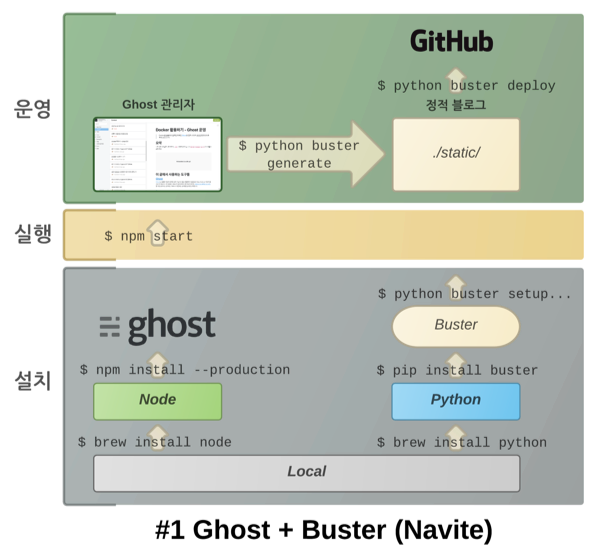
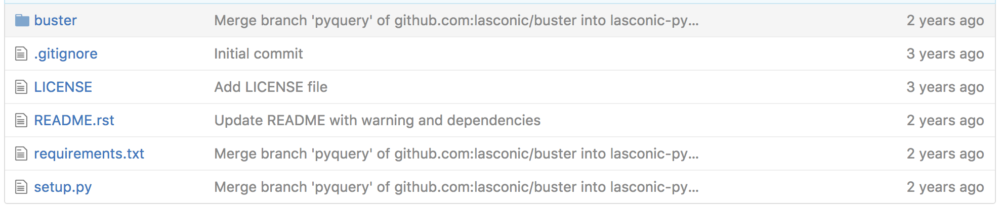
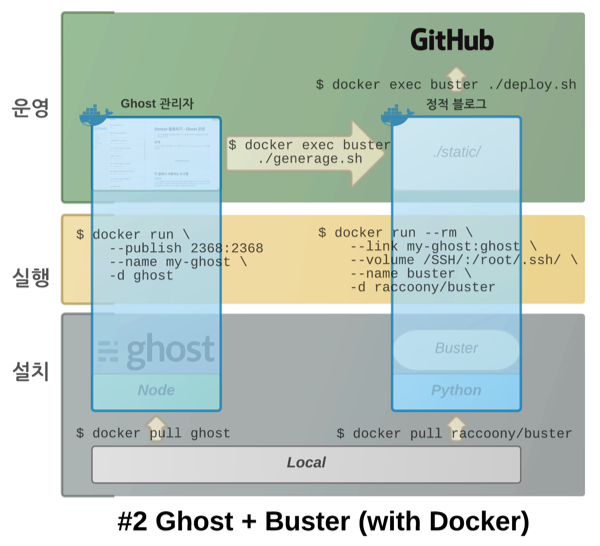
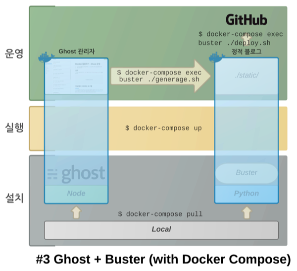

Docker를 활용하여 블로깅 도구인 Ghost와 Buster를 활용하여 정적 블로그 생성을 편리하게 구축해 보았습니다.
요약
다음 깃헙 저장소를 다운받은 후, .env 파일을 수정하고 나서 docker-compose up -d하면 블로깅 환경 완성! (필요한 건 오직 Docker뿐.)
이 글에서 사용하는 도구들
Ghost
Ghost는 깔끔한 외관과 편리한 관리 기능으로 많은 분들에게 사랑을 받고 있는 Node.js 기반의 블로깅 도구입니다. 호스팅형은 사용료가 월 $29여서 꽤 부담이 되지만, 오픈소스로 공개된 소스코드를 직접 설치하는 경우에는 무료라서 처음에는 설치형을 많이들 선택합니다.
Buster
Ghost를 로컬에서 실행한 후, 여기서 만들어진 HTML 파일을 긁어서(=정적 사이트 생성) 깃헙에 올리는 방식으로 블로그를 운영하는 경우도 많은데요. Buster는 이때 사용하는 파이썬 기반 도구입니다.
일반적인 구성
Ghost와 Buster를 사용하여 정적 사이트를 생성하는 가장 일반적인 방법은 다음과 같습니다.
- Ghost용 Node 설치, Buster용 파이썬 설치
- Ghost와 Buster를 로컬에 설치
- Ghost 서버를 띄워 글 작성
- Buster로 정적 사이트 생성 후 깃헙에 푸시
이를 명령어로 정리하면 다음과 같습니다.
# Ghost 설치 (Node v4 필요)
$ git clone git://github.com/tryghost/ghost.git
$ cd ghost
$ npm install --production
# Buster 설치 (파이썬 2 필요)
$ pip install buster
# Ghost 실행
$ npm start
# Buster 설정
$ python buster setup --gh-repo=...
# 정적 사이트 생성
$ python buster generate
# 깃헙에 푸시
$ python buster deploy
이를 그림으로 정리하면 다음과 같습니다.
#1 복잡해 보이는 Ghost - Buster 구성

일반적인 구성의 불편함
저도 처음엔 이 구성을 사용했지만, 크게 두 가지 문제를 겪었습니다.
- Ghost 업그레이드에 따른 Node 버전 관리
- Buster 개발 중단
Ghost는 초기에 Node 0.10을 사용했고, 한동안 0.12에 머물다가 최근 들어 Node v4를 지원하고 있습니다. (Ghost가 지원하는 Node 버전 안내를 참고) 이것이 크게 문제는 아니었지만 당시엔 제가 Node에 익숙하지 않아서, Ghost 서버를 실행할 때마다 nvm use 0.12를 까먹곤 했습니다.
더 불편한 것은 Buster가 Ghost 최신 버전에 맞춰 바뀌지 않는다는 점이었습니다. 마지막 커밋이 무려 2년 전에 머물러 있습니다.

하지만 지난 2년 간 Ghost는 버전 업을 거듭했고, 이에 따라 오리지널 Buster는 HTML 파싱을 제대로 못하거나 RSS 생성이 안 되는 등 다양한 문제가 발생하였습니다. 이를 해결하고자 처음엔 로컬에 설치된 Buster 소스를 조금씩 고쳐갔는데, 고치다보니 버전 관리도 안 되고 해서 아예 제 저장소로 포크를 했습니다.
그리고, 원본 Buster의 포크 기록을 보면서 최신 Ghost에 맞춰 수정한 커밋들을 참고하여 제 저장소도 수정했습니다.
마지막으론 Buster에서 자주 사용하는 명령들을 모아 fabfile.py도 작성하였습니다.
이렇게 블로그를 운영하던 중 2016년 말에 맥북을 바꾸게 되었는데, 또다시 블로깅 환경을 구성하는 지옥을 경험하기 싫었기에 Docker를 도입해 보기로 했습니다.
Docker 도입
일단 Docker로 Ghost를 띄워 보기로 했습니다. 마침 Docker Hub에 Ghost 공식 이미지가 존재해서 다음과 같이 시도해보았습니다.
$ docker run \
--publish 2368:2368
--name my-ghost \
-d ghost
--publish 옵션을 사용하여 로컬의 2368 포트와 컨테이너의 2368 포트를 연결했고요. 컨테이너 이름은 my-ghost라고 정했습니다. 저렇게 실행하고 http://127.0.0.1:2368/ghost에 접속했더니 Ghost 관리자 등록 화면이 저를 반겨주더군요.
Dockerfile
이제 Buster를 Docker 환경으로 꾸밀 차례입니다. 다음과 같은 Dockerfile을 작성했습니다.
# Dockerfile
FROM python:2
USER root
ENV LOGNAME raccoony
RUN pip install git+https://github.com/raccoonyy/buster.git#egg=buster
RUN mkdir /deploy
WORKDIR /deploy
COPY scripts/ /deploy/
RUN chmod a+x /deploy/*.sh
CMD ["./run.sh"]
- Buster는 파이썬 2 기반이므로 공식 파이썬 2 이미지를 사용했고, 제 저장소에 포크한 Buster를 설치하였습니다.
fabfile.py에서 처리하던 명령들은scripts디렉터리 아래의 스크립트 파일들로 옮겼습니다.
run.sh
다음은 run.sh 파일의 내용입니다.
#!/usr/bin/env bash
git config --global push.default simple
git config --global user.name raccoony
git config --global user.email raccoonyy@gmail.com
cd /deploy
git clone git@github.com:raccoonyy/raccoonyy.github.com.git static
cd /deploy/static
git branch --track master origin/master
python -m SimpleHTTPServer 1234
run.sh는 Buster용 컨테이너의 기초 작업을 수행합니다.- Git 설정을 마치면, 제 블로그용 저장소를 받아오고, 더미용 파이썬 웹 서버를 하나 띄웁니다. (웹 서버는 그저 컨테이너를 실행 상태로 유지시키는 일만 합니다.)
generate.sh
다음은 generate.sh 파일의 내용입니다.
#!/usr/bin/env bash
wget -O ./static/rss/index.rss http://ghost:2368/rss/
buster generate --github-id=raccoonyy --domain=http://ghost:2368/
generate.sh는 my-ghost 컨테이너에서 실행 중인 Ghost 서버를 크롤링하여/deploy/static디렉터리에 정적 사이트 파일을 생성합니다.- Buster에서 RSS 파일을 크롤링하지 못하는 듯 하여, wget 명령으로 미리 RSS 파일을 만들기도 했습니다.
preview.sh
다음은 preview.sh 파일의 내용입니다.
#!/usr/bin/env bash
buster preview
preview.sh는 미리보기용 Buster 웹 서버를 띄웁니다. (9000 포트로 접근할 수 있습니다.)
deploy.sh
다음은 deploy.sh 파일의 내용입니다.
#!/usr/bin/env bash
buster deploy
deploy.sh는 컨테이너 내부의/deploy/static디렉터리를 블로그용 저장소에 푸시하는 Buster 명령을 실행합니다.
실제 운영
이제 앞에서 만든 Dockerfile을 사용하여 Docker 이미지를 만들고...
$ docker build -t raccoony/buster .
다음 명령으로 Buster 실행용 컨테이너를 실행하였습니다.
$ docker run --rm \
--link my-ghost:ghost \
--volume /SSH/:/root/.ssh/ \
--name buster \
-d raccoony/buster
--link옵션에서는my-ghost컨테이너를ghost라는 이름으로 참조하겠다고 명시했습니다.- 개인적으로는 깃헙에 푸시할 때 개인키 로그인 방식을 사용하고 있습니다. 이를 buster 컨테이너 안에서도 사용하기 위해
--volume옵션에서 로컬의 개인키 디렉터리를 컨테이너 안으로 연결했고요. (개인키는buster deploy에 필요합니다./SSH/부분은 로컬 컴퓨터의 개인키 저장 위치입니다.) - 컨테이너 이름은
buster로 지정하였습니다.
이렇게 컨테이너를 띄운 후 실제 사용할 때는 다음처럼 buster 컨테이너에 붙어 셸 스크립트를 실행합니다.
# 정적 사이트 생성
$ docker exec buster ./generage.sh
# 미리보기
$ docker exec buster ./preview.sh
# 배포
$ docker exec buster ./deploy.sh
여기까지의 상황을 그림으로 정리하면 다음과 같습니다.
#2 구성은 단순해졌지만 명령어가 복잡해진 Ghost - Buster with Docker 구성

설치부터 실행까지의 명령어가 단촐해졌음을 확인할 수 있습니다.
Docker 구성의 불편함
이제 끝내고 싶었지만 또다른 불편함이 있었습니다.
- 복잡한 옵션을 매번 적기가 귀찮음
- Ghost 컨테이너 띄우고, 이어서 Buster 컨테이너를 띄우는 작업을 한 명령으로 처리할 수는 없을까?
다른 것보다는 복잡한 옵션들을 매번 적어주기가 귀찮았습니다. 그러던 차에 Docker Compose라는 도구가 떠올랐습니다. 얼핏 보기엔 옵션을 미리 적어둘 수 있고, 컨테이너를 여럿 묶어서 순서대로 실행하기에도 편한 도구라고 생각했습니다.
Docker Compose 도입
역시나 Ghost를 Docker Compose로 띄워보기 위해 다음과 같은 docker-compose.yml 파일을 작성하였습니다.
# docker-compose.yml
version: '2'
services:
ghost:
image: ghost
ports:
- "2368:2368"
이제 다음과 같은 명령으로 컨테이너를 실행할 수 있습니다.
$ docker-compose up
ghost_1 | npm info it worked if it ends with ok
ghost_1 | npm info using npm@2.15.11
ghost_1 | npm info using node@v4.7.2
ghost_1 | npm info prestart ghost@0.11.4
ghost_1 | npm info start ghost@0.11.4
ghost_1 |
ghost_1 | > ghost@0.11.4 start /usr/src/ghost
ghost_1 | > node index
ghost_1 |
ghost_1 | WARNING: Ghost is attempting to use a direct method to send email.
ghost_1 | It is recommended that you explicitly configure an email service.
ghost_1 | Help and documentation can be found at http://support.ghost.org/mail.
ghost_1 |
ghost_1 | Ghost is running in production...
ghost_1 | Your blog is now available on http://raccoonyy.github.io
ghost_1 | Ctrl+C to shut down
여기에 Buster 컨테이너도 함께 띄우기 위해 docker-compose.yml 파일을 수정하였습니다.
# docker-compose.yml (수정)
version: '2'
services:
ghost:
image: ghost
ports:
- "2368:2368"
buster:
image: raccoony/buster
links:
- ghost
depends_on:
- ghost
environment:
- PUBLIC_URL=raccoonyy.github.io
- GIT_REPO=git@github.com:raccoonyy/raccoonyy.github.com.git
volumes:
- ~/.ssh/id_rsa:/root/.ssh/id_rsa
- ~/.ssh/known_hosts:/root/.ssh/known_hosts
ports:
- "9000:9000"
이제 컨테이너를 다시 띄워봅니다.
$ docker-compose down && docker-compose up
Attaching to blog_ghost_1, blog_buster_1
ghost_1 | npm info it worked if it ends with ok
buster_1 | Cloning into 'static'...
ghost_1 | npm info using npm@2.15.11
ghost_1 | npm info using node@v4.7.2
ghost_1 | npm info prestart ghost@0.11.4
ghost_1 | npm info start ghost@0.11.4
ghost_1 |
ghost_1 | > ghost@0.11.4 start /usr/src/ghost
ghost_1 | > node index
ghost_1 |
ghost_1 | WARNING: Ghost is attempting to use a direct method to send email.
ghost_1 | It is recommended that you explicitly configure an email service.
ghost_1 | Help and documentation can be found at http://support.ghost.org/mail.
ghost_1 |
ghost_1 | Ghost is running in production...
ghost_1 | Your blog is now available on http://raccoonyy.github.io
ghost_1 | Ctrl+C to shut down
buster 컨테이너에 들어가 보겠습니다. /deploy 디렉터리에는 buster 운영에 필요한 스크립트들이 들어 있고, /deploy/static 디렉터리에는 블로그용 저장소의 최신 버전이 다운로드되어 있습니다. (인터넷 연결이 끊긴 상태에서는 블로그용 저장소를 연결하지 못해서 /deploy/static 디렉터리가 생성되지 않습니다.)
$ docker-compose exec buster bash
root@ec7c576f1615:/deploy# ls
deploy.sh generate.sh preview.sh run.sh static
...
이 상태에서 바로 generate.sh를 실행해도 되고, 이미 컨테이너 접속을 끊은 상태라면 docker-compose exec buster ./generate.sh처럼 실행할 수도 있습니다.
블로그 운영 관련 명령들은 다음과 같이 바뀌었습니다. (개인적으론 docker-compose를 많이 사용하게 되면서 dco라는 축약어로 등록하였습니다.)
# 정적 사이트 생성
$ docker-compose exec buster ./generage.sh
# 미리보기
$ docker-compose exec buster ./preview.sh
# 배포
$ docker-compose exec buster ./deploy.sh
구성은 크게 바뀌지 않았지만, 실행해야 하는 명령어들은 좀더 단촐해졌습니다. (저한테는 이 부분이 컸습니다.)
#3 구성과 명령어 모두 단촐해진 Ghost - Buster with Docker Compose 구성

결말
블로그 하나 운영하면서 뭐 이렇게 복잡한 과정을 거치냐고 생각하실 수도 있겠지만, 이제는 맥북을 바꾸거나 심지어 윈도 10 환경에서도 블로깅을 할 수 있다는 장점이 가장 크다고 생각합니다.
지금까지 진행한 내용은 다음 저장소에 모두 정리해두었고, 개인 정보들은 환경변수로 만들어 두었습니다. 필요한 분들은 저장소를 다운받은 후 .env 파일을 수정하고서 docker-compose up -d하시면 되겠습니다. (아! 물론 Docker가 설치되어 있어야 합니다. 다른 건 다 필요 없고 Docker만요!)